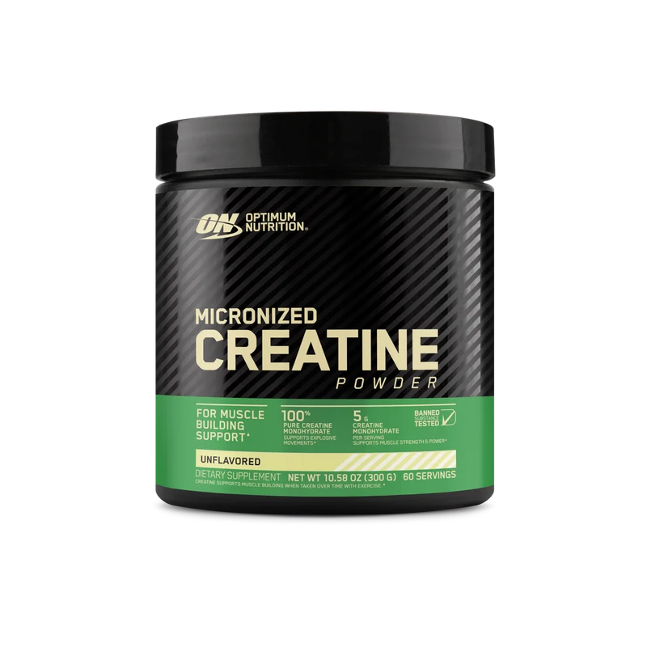
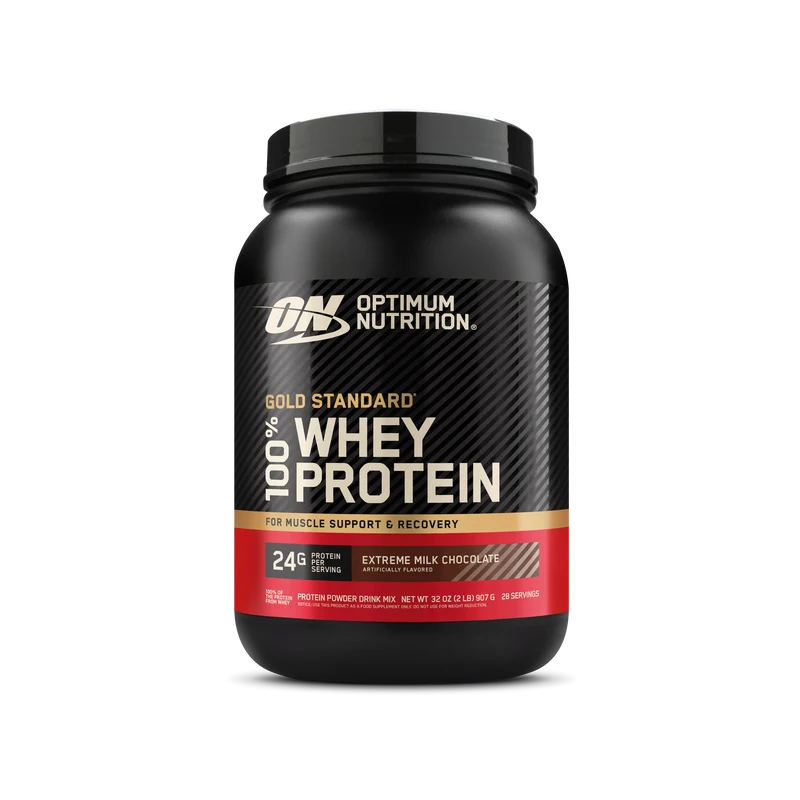
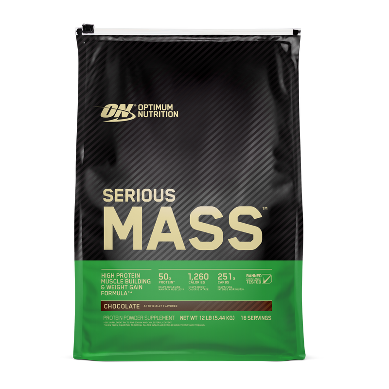

Хороший выбор —
это состав, а не хайп.
Подборка известных продуктов для сравнения: креатин, протеин и гейнер. Это не независимый лабораторный рейтинг и не обещание результата. Цены, рецептуры, сертификаты и наличие различаются по странам и меняются со временем — сверяй актуальную этикетку.
Сравнивай то,
что действительно важно.
Сначала проверь, нужна ли тебе добавка. Затем сравни активные ингредиенты, дозу на порцию, аллергенность, цену за порцию и подтверждение качества конкретной партии. Ниже — примеры известных продуктов, не места «от лучшего к худшему».

01 / MICRONIZED CREATINE · OPTIMUM NUTRITION ↗Креатин
Моногидрат — наиболее изученная и обычно наиболее разумная форма для взрослых. Популярные примеры для сравнения:
- Creapure® Creatine MonohydrateСмотри, чтобы именно это сырьё было указано на этикетке конкретного продукта.
- Optimum Nutrition Micronized CreatineСравни состав и стоимость за 3–5 г моногидрата.
- Myprotein Creatine MonohydrateПроверь, что формула без лишних смесей и соответствует местной маркировке.

02 / GOLD STANDARD 100% WHEY · OPTIMUM NUTRITION ↗Протеин
Порошковый белок — удобная еда, не обязательное условие роста мышц. Выбирай сывороточный, изолят или растительный по переносимости и бюджету.
- Optimum Nutrition Gold Standard 100% WheyСравни белок на порцию, ингредиенты и наличие молочных аллергенов.
- Myprotein Impact Whey ProteinПроверь локальную формулу и цену за фактическую порцию белка.
- Dymatize ISO100Пример сывороточного изолята; обычно сравнивай цену и состав с обычным концентратом.

03 / SERIOUS MASS · OPTIMUM NUTRITION ↗Гейнер
Калорийная смесь белка и углеводов может быть удобной, если взрослому трудно набрать энергию обычной едой. Она не «наращивает мышцы» сама по себе.
- Optimum Nutrition Serious MassПроверь очень крупный размер порции, калорийность и сахар.
- Dymatize Super Mass GainerСверь калории, белок и количество порций в упаковке.
- Mutant MassСравни фактический состав и стоимость порции в своём регионе.
Фото упаковок: Optimum Nutrition, официальные изображения товаров. Нажми на фото, чтобы открыть страницу производителя.
Чек-лист перед покупкой
- Понятный полный состав и размер порции.
- Без «proprietary blend» и обещаний мгновенного результата.
- Проверь срок годности, продавца, пломбу и аллергенную маркировку.
- Независимая сертификация должна относиться к точному продукту/партии — например, NSF Certified for Sport или Informed Choice; проверь запись в реестре сертифицирующей организации.
- Сравнивай цену за реальную дозу, а не только за банку.